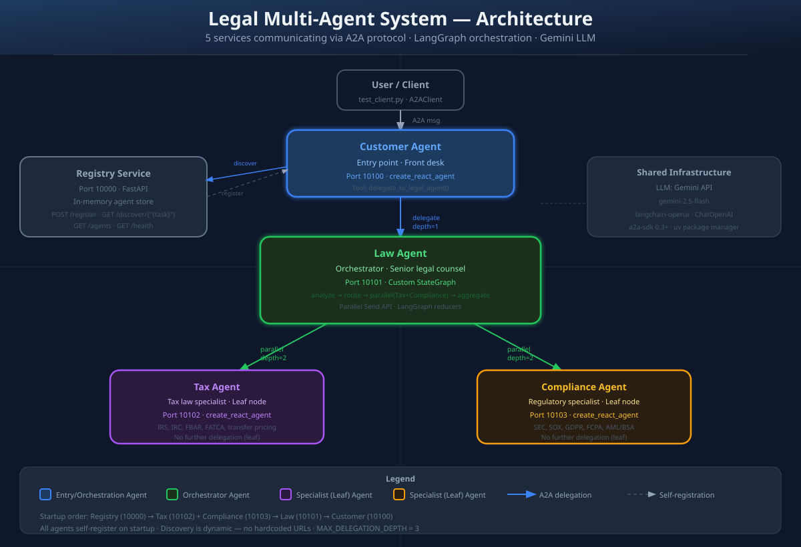

Agent-to-Agent (A2A) & MCP
(Customer · Law · Tax · Compliance Agents qua A2A)
Mục tiêu bài học
🧠 Kiến thức (Knowledge)
- Phân biệt được monolithic LLM và multi-agent system
- Nắm vững khái niệm A2A Protocol: AgentCard, Task, Message, Part, Artifact
- Hiểu vai trò của MCP (Model Context Protocol) và cách nó bổ trợ A2A
- Phân biệt được khi nào dùng A2A vs khi nào dùng MCP
🛠️ Kỹ năng (Skills)
- Đọc và triển khai AgentCard JSON đúng chuẩn
- Sử dụng LangGraph StateGraph + Send API để fan-out song song
- Cấu hình service discovery động qua Registry
- Theo dõi (trace) một yêu cầu xuyên qua nhiều agent với
trace_id
Lộ trình 5 phần
- Phần 1. Bối cảnh: Vì sao multi-agent? Lộ trình tiến hoá của LLM
- Phần 2. MCP — chuẩn cho LLM kết nối công cụ và dữ liệu
- Phần 3. A2A — chuẩn cho các agent giao tiếp với nhau
- Phần 4. So sánh A2A vs MCP — khi nào dùng cái nào?
- Phần 5. Case study: hệ thống tư vấn pháp lý phân tán


Hai chuẩn mới của thế hệ AI Agent
🔌 MCP — Model Context Protocol
Do Anthropic giới thiệu (2024)
"USB-C cho AI" — chuẩn để LLM kết nối với nguồn dữ liệu và công cụ
- Client–Server architecture
- Server cung cấp:
resources,tools,prompts - LLM (client) gọi tool, đọc file, query DB qua chuẩn chung
- Quan hệ: LLM ↔ Tool/Data
🤝 A2A — Agent-to-Agent Protocol
Do Google giới thiệu (2025)
Chuẩn để các agent độc lập giao tiếp như những đối tác bình đẳng
- Peer-to-peer architecture
- Server công bố:
AgentCard,skills,tasks - Agent uỷ thác (delegate) công việc cho agent khác
- Quan hệ: Agent ↔ Agent
Phép loại suy
MCP: ≈ "USB-C" → Một thiết bị (LLM) kết nối với nhiều phụ kiện (DB, API, file)
A2A: ≈ "TCP/IP" → Nhiều máy độc lập trên mạng nói chuyện với nhau
💡 Quan trọng: Trong dự án thực tế thường dùng cả hai. Một agent A2A có thể bên trong vẫn dùng nhiều MCP server để truy cập dữ liệu.
MCP — Model Context Protocol
Vấn đề MCP giải quyết
Trước MCP: mỗi ứng dụng AI tự viết tích hợp riêng cho từng công cụ (Slack, GitHub, Postgres, Google Drive…). N × M problem: N ứng dụng × M công cụ = N × M tích hợp.
Với MCP: mỗi công cụ chỉ cần một MCP Server; mỗi ứng dụng AI chỉ cần một MCP Client. Tổng tích hợp giảm xuống N + M.
Kiến trúc
┌──────────────┐ stdio / SSE / HTTP ┌──────────────────┐
│ │ ◄────────────────► │ │
│ MCP Host │ JSON-RPC 2.0 │ MCP Server │
│ (Claude, │ │ (filesystem, │
│ Cursor, │ │ GitHub, DB, │
│ IDE…) │ │ Slack…) │
│ │ │ │
└──────────────┘ └──────────────────┘
▲ │
│ user prompt ▼
│ ┌──────────────────┐
│ │ Resource / │
└──────► LLM gọi tools ◄──────────│ Tool / Prompt │
└──────────────────┘
3 thành phần cốt lõi của MCP Server
- Resources — dữ liệu chỉ đọc (file, log, snapshot DB)
- Tools — hàm có side-effect (gửi email, chạy SQL, tạo PR)
- Prompts — mẫu prompt tái sử dụng (templates)
Khi nào dùng MCP
- Cần cho LLM quyền truy cập vào dữ liệu/công cụ nội bộ
- Muốn tách phần kết nối khỏi logic agent (loose coupling)
- Cần reuse cùng một MCP server cho nhiều IDE / app khác nhau
- Cần kiểm soát quyền: phê duyệt từng lần gọi tool


A2A vs MCP — So sánh có hệ thống
| MCP — Model Context Protocol | A2A — Agent-to-Agent Protocol | |
|---|---|---|
| Tổ chức công bố | Anthropic (2024) | Google (2025) |
| Mục đích | Kết nối LLM với công cụ và dữ liệu | Kết nối các agent với nhau |
| Quan hệ | Client – Server (bất đối xứng) | Peer – Peer (đối xứng) |
| Đơn vị giao tiếp | Resource, Tool, Prompt |
Task, Message, Artifact |
| Tự chủ (autonomy) | Tool thụ động — chỉ thực thi khi được gọi | Agent chủ động — có thể tự lập kế hoạch, gọi agent khác |
| State / Lifecycle | Stateless (chủ yếu); 1 lệnh = 1 response | Stateful Task: submitted → working → completed |
| Discovery | Cấu hình tĩnh trong host (mcp.json) | Động qua AgentCard ở /.well-known/agent.json |
| Transport | stdio · SSE · HTTP (JSON-RPC 2.0) | HTTP + JSON-RPC + Server-Sent Events |
| Streaming | Có (qua SSE) | Có — bắt buộc trong specification |
Kết hợp trong thực tế
User
│
▼
┌────────────────────────────────────┐
│ Customer Agent (A2A Server) │
│ ─────────────────────────────── │
│ • Nhận message qua A2A │
│ • Bên trong dùng MCP để truy cập: │
│ ├── filesystem MCP server │
│ ├── postgres MCP server │
│ └── github MCP server │
│ • Uỷ thác qua A2A đến: │
│ ├── Law Agent (A2A) │
│ ├── Tax Agent (A2A) │
│ └── Compliance Agent (A2A) │
└────────────────────────────────────┘
✓ Quy tắc nhớ: MCP cho mọi thứ không phải agent; A2A cho mọi thứ là agent.




Tổng kết & Bài tập thực hành
5 điểm cốt lõi (Take-aways)
- 1. LLM đơn lẻ → multi-agent là bước tiến tự nhiên khi domain phức tạp và cần song song hoá.
- 2. MCP chuẩn hoá cách LLM tiêu thụ công cụ và dữ liệu.
- 3. A2A chuẩn hoá cách các agent cộng tác như những peer độc lập.
- 4. Cả hai cùng tồn tại:
A2A bên ngoài, MCP bên trong. - 5. Quan sát (observability) bằng
trace_idlà bắt buộc với hệ thống phân tán.
📚 Bài tập cá nhân (về nhà)
- Đọc spec A2A tại
github.com/google/A2A - Đọc spec MCP tại
modelcontextprotocol.io - Vẽ lại sơ đồ AgentCard của Law Agent từ
__main__.py - Đối chiếu StateGraph trong
law_agent/graph.pyvới SVG 05
🧪 Bài tập nhóm (project)
- Thêm một agent mới (vd. Finance Agent) — đăng ký với Registry
- Sửa Law Agent để uỷ thác sang Finance Agent khi câu hỏi liên quan tài chính
- Bổ sung 1 MCP server (vd. filesystem) cho Tax Agent để đọc văn bản luật cục bộ
- Báo cáo: vẽ sơ đồ + bảng so sánh hiệu năng có/không có parallel
Tài liệu tham khảo
- A2A spec:
github.com/google/A2A - MCP spec:
modelcontextprotocol.io - LangGraph docs:
langchain-ai.github.io/langgraph - Source code dự án: repository này — đọc theo thứ tự
stages/1 → 5